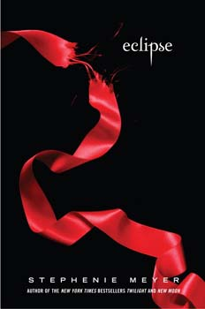

Recommended Books
Eclipse (Meyer novel)
The novel explores Bella's compromise between her love for Edward and her friendship with shape-shifter Jacob Black, along with her dilemma of leaving her mortality behind in a terrorized atmosphere, a result of mysterious vampire attacks in Seattle. Eclipse is preceded by New Moon and followed by Breaking Dawn.

Harry Potter and the Philosopher's Stone
Novel series By J.K. Rowling
This book has a vivid descriptions, incredible scenes, magical imagination, attractive plots and unforgettable characters. I always feel like I stand face-to-face with the figures. The story begins with a miserable boy named Harry Potter.
The Great Gatsby
Novel by F. Scott Fitzgerald
The Great Gatsby is a man like everyone, he's flawed, he's chasing a woman and he's deeply lonely despite having a large house, lots of money, and large parties. The plot itself is slow. This novel was written in 1925, a time before authors cared more plot and cared more about how their book was written.